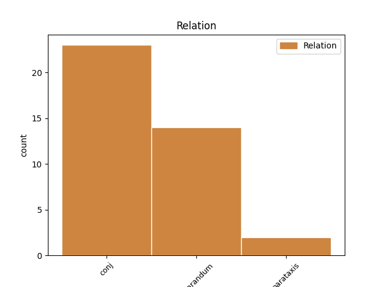
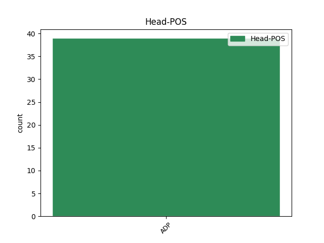
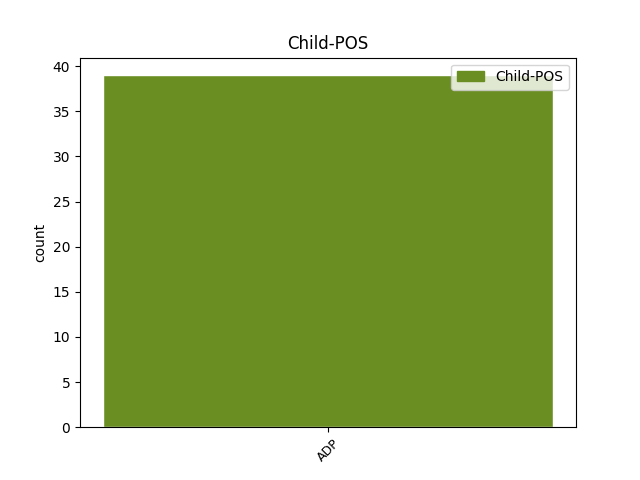

Distribution of features within this leaf



Agreement Rules sorted by frequency.
- When the dependent token is the conjunct(conj) of the head token, and the head token is ADP and the dependent token is ADP.
1 iskalnik _ _ _ _ 0 _ _ _
2 je _ _ _ _ 0 _ _ _
3 po _ _ _ _ 0 _ _ _
4 krajih _ _ _ _ 0 _ _ _
5 po po ADP Sl Case=Loc 0 _ _ _
6 imenih _ _ _ _ 0 _ _ _
7 po _ _ _ _ 0 _ _ _
8 po _ _ _ _ 0 _ _ _
9 po _ _ _ _ 0 _ _ _
10 po po ADP Sl Case=Loc 5 conj _ msd=Dm|word=po
11 ukrepih _ _ _ _ 0 _ _ _
12 ne _ _ _ _ 0 _ _ _
13 in _ _ _ _ 0 _ _ _
14 tam _ _ _ _ 0 _ _ _
15 lahko _ _ _ _ 0 _ _ _
16 če _ _ _ _ 0 _ _ _
17 greste _ _ _ _ 0 _ _ _
18 na _ _ _ _ 0 _ _ _
19 ukrep _ _ _ _ 0 _ _ _
20 ne _ _ _ _ 0 _ _ _
21 pogledate _ _ _ _ 0 _ _ _
22 eee _ _ _ _ 0 _ _ _
23 k _ _ _ _ 0 _ _ _
24 [gap] _ _ _ _ 0 _ _ _
25 j _ _ _ _ 0 _ _ _
26 [gap] _ _ _ _ 0 _ _ _
27 recimo _ _ _ _ 0 _ _ _
28 pasivna _ _ _ _ 0 _ _ _
29 hiša _ _ _ _ 0 _ _ _
30 je _ _ _ _ 0 _ _ _
31 se _ _ _ _ 0 _ _ _
32 vam _ _ _ _ 0 _ _ _
33 odprejo _ _ _ _ 0 _ _ _
34 primeri _ _ _ _ 0 _ _ _
35 pasivne _ _ _ _ 0 _ _ _
36 hiše _ _ _ _ 0 _ _ _
37 eee _ _ _ _ 0 _ _ _
38 v _ _ _ _ 0 _ _ _
39 eee _ _ _ _ 0 _ _ _
40 v _ _ _ _ 0 _ _ _
41 sloveniji _ _ _ _ 0 _ _ _
42 ne _ _ _ _ 0 _ _ _
1 eee _ _ _ _ 0 _ _ _
2 v v ADP Sl Case=Loc 3 reparandum _ msd=Dm|word=v
3 v v ADP Sl Case=Loc 0 _ _ _
4 glavnem _ _ _ _ 0 _ _ _
5 hočem _ _ _ _ 0 _ _ _
6 reči _ _ _ _ 0 _ _ _
7 da _ _ _ _ 0 _ _ _
8 to _ _ _ _ 0 _ _ _
9 ni _ _ _ _ 0 _ _ _
10 čas _ _ _ _ 0 _ _ _
11 za _ _ _ _ 0 _ _ _
12 špetir _ _ _ _ 0 _ _ _
13 in _ _ _ _ 0 _ _ _
14 p _ _ _ _ 0 _ _ _
15 [gap] _ _ _ _ 0 _ _ _
16 eee _ _ _ _ 0 _ _ _
17 medsebojno _ _ _ _ 0 _ _ _
18 prepiranje _ _ _ _ 0 _ _ _
19 ampak _ _ _ _ 0 _ _ _
20 eee _ _ _ _ 0 _ _ _
21 da _ _ _ _ 0 _ _ _
22 je _ _ _ _ 0 _ _ _
23 treba _ _ _ _ 0 _ _ _
24 žogo _ _ _ _ 0 _ _ _
25 umiriti _ _ _ _ 0 _ _ _
1 [gap] _ _ _ _ 0 _ _ _
2 po po ADP Sa Case=Acc 0 _ _ _
3 moje _ _ _ _ 0 _ _ _
4 po po ADP Sa Case=Acc 2 parataxis _ msd=Dt|word=po
5 moje _ _ _ _ 0 _ _ _
Disagree Examples:
1 dvom _ _ _ _ 0 _ _ _
2 zbuja _ _ _ _ 0 _ _ _
3 tudi _ _ _ _ 0 _ _ _
4 dejstvo _ _ _ _ 0 _ _ _
5 da _ _ _ _ 0 _ _ _
6 sta _ _ _ _ 0 _ _ _
7 bila _ _ _ _ 0 _ _ _
8 pravilnika _ _ _ _ 0 _ _ _
9 o _ _ _ _ 0 _ _ _
10 verski _ _ _ _ 0 _ _ _
11 oskrbi _ _ _ _ 0 _ _ _
12 sprejeta _ _ _ _ 0 _ _ _
13 na na ADP Sa Case=Acc 0 _ _ _
14 hitro _ _ _ _ 0 _ _ _
15 in _ _ _ _ 0 _ _ _
16 brez brez ADP Sg Case=Gen 13 conj _ msd=Dr|word=brez
17 javne _ _ _ _ 0 _ _ _
18 razprave _ _ _ _ 0 _ _ _
19 poleg _ _ _ _ 0 _ _ _
20 tega _ _ _ _ 0 _ _ _
21 pa _ _ _ _ 0 _ _ _
22 se _ _ _ _ 0 _ _ _
23 znova _ _ _ _ 0 _ _ _
24 postavlja _ _ _ _ 0 _ _ _
25 že _ _ _ _ 0 _ _ _
26 staro _ _ _ _ 0 _ _ _
27 vprašanje _ _ _ _ 0 _ _ _
1 tu _ _ _ _ 0 _ _ _
2 se _ _ _ _ 0 _ _ _
3 je _ _ _ _ 0 _ _ _
4 oziroma _ _ _ _ 0 _ _ _
5 zašla _ _ _ _ 0 _ _ _
6 v _ _ _ _ 0 _ _ _
7 ta _ _ _ _ 0 _ _ _
8 nariti _ _ _ _ 0 _ _ _
9 sneg _ _ _ _ 0 _ _ _
10 tist _ _ _ _ 0 _ _ _
11 [gap] _ _ _ _ 0 _ _ _
12 po po ADP Sl Case=Loc 0 _ _ _
13 tisti _ _ _ _ 0 _ _ _
14 oziroma _ _ _ _ 0 _ _ _
15 pred pred ADP Si Case=Ins 12 conj _ msd=Do|word=pred
16 prelomnico _ _ _ _ 0 _ _ _